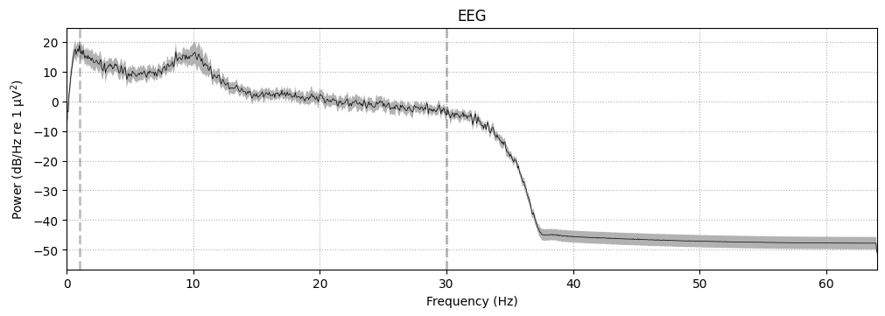

Using the EEGDUCKS Python Module
Overview
EEGDUCKS is a beginner-friendly Python library designed to simplify EEG (electroencephalography) data analysis for psychology students. It serves as a wrapper around MNE-Python, making neuroimaging analysis accessible without extensive coding experience.
Installation
Before using eegducks, you need to install the library. In a Python environment or Jupyter notebook, run:
pip install eegducksNote: If using Google Colab, prefix the command with an exclamation mark:
!pip install eegducksStep 1: Import the Library
Once installed, import eegducks into your Python environment. It’s conventional to use an alias for convenience:
import eegducks as edsThis allows you to call eegducks functions using the shorter eds prefix throughout your code.
Step 2: Load EEG Data
Preparing Your Files
EEG datasets typically consist of two components:
- EEG data file: Contains the actual brain signal recordings (formats:
.fiff,.set, etc.) - Channel location file: Specifies the positions of EEG electrodes (formats:
.tsv,.locs)
Loading the Data
First, specify the path to your channel location file:
# Define the channel location file path
chan = "/path/to/your/channel_locations.locs"Next, load your EEG data using the load() function:
# Load EEG data and store it in a variable called 'raw'
raw = eds.load("/path/to/your/eeg_data.set", locinf=chan)Load Function Parameters
The load() function accepts several optional parameters for preprocessing:
load(filepath, l_freq=1, h_freq=30, preload=True,
ref="average", plot=True, locinf=None)- filepath: Path to your EEG data file (required)
- l_freq: Low-pass filter frequency in Hz (default: 1)
- h_freq: High-pass filter frequency in Hz (default: 30)
- preload: Whether to load data into memory (default: True)
- ref: Reference method for channels (default: “average”)
- plot: Whether to display plots automatically (default: True)
- locinf: Path to channel location file (default: None)
What happens during loading: The function imports your data, applies filtering to remove noise, sets up channel locations, and prepares the data for analysis.
Step 3: Visualize Continuous EEG Data
After loading your data, you can visualize the raw EEG signals over time:
# Plot continuous EEG data
eds.plot(raw)Plot Function Parameters
Customize your visualization with these parameters:
plot(raw, dur=5, n_chan=20)- raw: Your loaded EEG data object (required)
- dur: Duration of data to display in seconds (default: 5)
- n_chan: Number of channels to display (default: 20)
This generates a time-series plot showing voltage fluctuations across different electrode channels.
Step 4: Analyze the Power Spectrum
The power spectrum reveals the frequency composition of your EEG signals, showing activity in different brain wave bands (delta, theta, alpha, beta, gamma).
# Plot power spectrum for all channels
eds.psdplt(raw)
# Plot average power spectrum across channels
eds.psdplt(raw, avg=True)
The power spectrum plot helps identify dominant frequencies in your data and can reveal artifacts or abnormal patterns.
Step 5: Define Epochs and Events
Epochs are time-locked segments of EEG data aligned to specific events (e.g., stimulus presentation, button presses).
Method 1: Events in Annotations
If your events are already embedded in the EEG file:
eds.epochs(raw)Method 2: Events in Separate File
If events are stored separately (common in structured datasets):
# Specify the events file path
ev = "/path/to/your/events.tsv"
# Create epochs using the events file
eds.epochs(raw, events_tsv=ev)Epochs Function Parameters
Fine-tune your epoch extraction:
epochs(raw, event_id=2, tmin=-1, tmax=2, baseline=(-0.5, 0),
reject=None, plot=True, events_tsv=None)- raw: Your loaded EEG data object (required)
- event_id: Specific event type to extract (default: 2)
- tmin: Start time relative to event in seconds (default: -1)
- tmax: End time relative to event in seconds (default: 2)
- baseline: Time window for baseline correction (default: -0.5 to 0 seconds)
- reject: Threshold for rejecting bad epochs (default: None)
- plot: Whether to generate epoch plots (default: True)
- events_tsv: Path to external events file (default: None)
This function automatically generates visualizations showing averaged epochs and individual trials.
Step 6: Run Independent Component Analysis (ICA)
ICA separates EEG signals into independent components, making it easier to identify and remove artifacts like eye blinks, muscle activity, or electrical noise.
# Run ICA with default 15 components
eds.ica(raw)### ICA Function Parameters
Adjust the ICA parameters as needed:
ica(raw, n_components=15, montage=None)- raw: Your loaded EEG data object (required)
- n_components: Number of independent components to compute (default: 15)
- montage: Electrode montage specification (default: None)
The ICA function generates plots showing the spatial distribution and time course of each component, helping you identify which components represent artifacts versus neural activity.
Step 7: Visualize Frequency Bands
Examine activity in specific frequency bands associated with different brain states:
# Plot standard frequency bands (delta, theta, alpha, beta, gamma)
eds.pltbands(raw)
# For epoched data, you can also specify custom bands
# eds.pltbands(epochs, bands=None)Standard frequency bands: - Delta (1-4 Hz): Deep sleep - Theta (4-8 Hz): Drowsiness, meditation - Alpha (8-13 Hz): Relaxed wakefulness - Beta (13-30 Hz): Active thinking, focus - Gamma (30+ Hz): Higher cognitive processing
Example Workflow
Here’s a complete example combining all steps:
# Import library
import eegducks as eds
# Load data
chan = "/content/sample/eeglab_chan32.locs"
raw = eds.load("/content/sample/eeglab_data.set", locinf=chan)
# Visualize raw data
eds.plot(raw, dur=10, n_chan=15)
# Analyze power spectrum
eds.psdplt(raw, avg=True)
# Create epochs
ev = "/content/sample/events.tsv"
eds.epochs(raw, events_tsv=ev, tmin=-0.5, tmax=1.5)
# Run ICA
eds.ica(raw, n_components=20)
# Plot frequency bands
eds.pltbands(raw)Tips for Beginners
Start with small datasets: Begin with short recordings to understand the workflow before analyzing larger files.
Check your file paths: Ensure all file paths are correct and use forward slashes (
/) or raw strings to avoid path errors.Experiment with parameters: Try different filter frequencies and epoch windows to see how they affect your analysis.
Understand your data: Review the dataset documentation to know the sampling rate, channel layout, and event codes.
Visualize first: Always plot your data before running complex analyses to spot obvious artifacts or issues.
Resources
- MNE-Python Documentation: https://mne.tools/
- Google Colab: https://colab.research.google.com/
- OpenNeuro Datasets: https://openneuro.org/
Troubleshooting
Issue: Import error when loading eegducks - Solution: Ensure you’ve run the installation command and restarted your kernel if necessary
Issue: File not found errors - Solution: Verify file paths are correct and files are uploaded to your workspace (especially in Google Colab)
Issue: Plots not displaying - Solution: Set plot=True in function parameters or manually display using plt.show()
EEGDUCKS is designed as a training tool to bridge the gap between theoretical knowledge and practical EEG analysis. As you become more comfortable, consider exploring the full capabilities of MNE-Python for advanced analyses.